本书作者：测试开发刚哥，文章版权归个人所有，未经授权请勿转载。
本文开发内容
现在正式进入测试相关功能开发。teprunner 测试平台底层是 pytest，中间层是 tep，还没了解的朋友可以先看看 tep 的文章，整个平台的设计思路和后面用例的执行都会基于这个工具。tep 的测试用例是放在.py 文件里面的，全局变量或者说环境变量是引用的 env_vars，公共函数和复用接口是引用的 fixtures，在做成平台后，需要把这两个部分独立为两个功能模块。多个项目的接口自动化数据需要隔离开来，要有个项目管理功能。本文将开发四个用例前置模块：
- 后台管理–项目管理
- 接口自动化–语法说明
- 接口自动化–环境变量
- 接口自动化–fixtures
语法说明给出了环境变量、fixtures、用例示例（单个接口、多个接口–增删改查）、请求方法（get、post、put、delete）的使用方法。
编写后端代码
先创建名为 teprunner 的 app：
django-admin startapp teprunner
在 settings 的 INSTALLED_APPS 中添加配置让 app 生效：
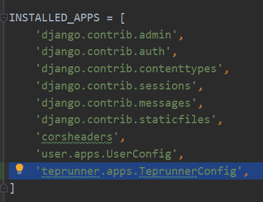
并在 urls.py 添加路由：
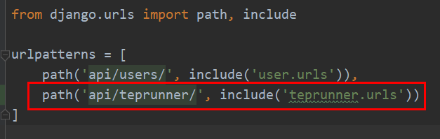
编辑 user/fixtures/user.json，添加一个接口自动化的菜单：
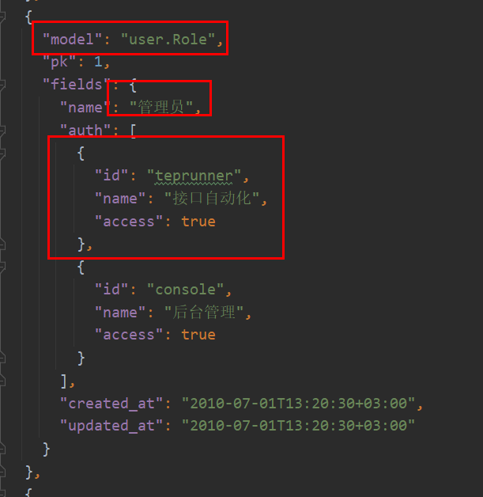
截图只截了管理员，测试和开发角色，也需要添加上。access 均为 true，这三个角色都可以访问。添加后把数据同步到数据库：
python manage.py loaddata user
编辑 teprunner/models.py，新增模型：
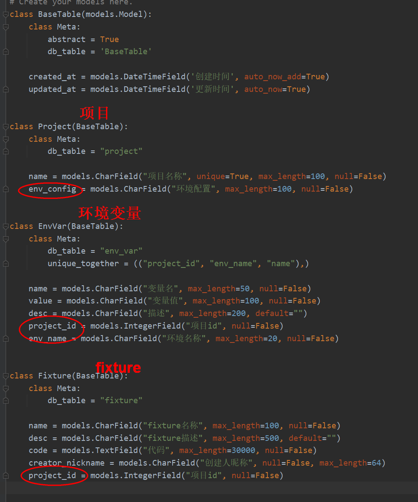
包括了项目、环境变量和 fixture 三张表。Project.env_config 用于给项目配置多个环境。不同项目不同环境的环境变量不一样，在 EnvVar 中添加了 project_id 和 env_name，并按(“project_id”, “env_name”, “name”)作为唯一键，不允许重复。不同项目的 fixtures 不同，不关心环境，在 Fixture 中只添加了 project_id。
Fixture.code 用于存放代码，字段类型为 models.TextField，容纳更多字符。
models 编写好后，迁移到数据库：
python manage.py makemigrations
python manage.py migrate
新建 teprunner/serializers.py 文件，新增序列化器：
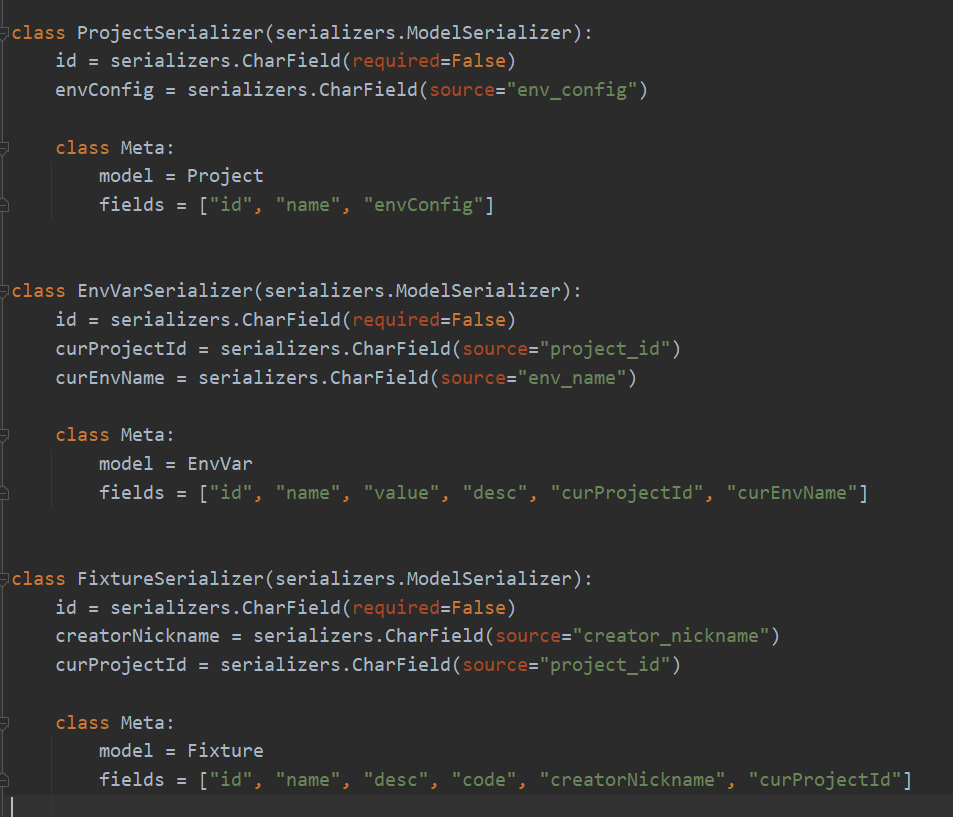
数据库字段的命名是用的下划线，接口返回前端和前端传参是用的驼峰，所以这里通过 source 这种方式给 env_config、project_id、env_name、creator_nickname 进行了序列化器的重命名。为了前端更方便处理，使用 serializers.CharField 把 int 转化为了 str，由于请求时 id 非必须，增加参数 required=False。
teprunner 会有很多视图，写在一个文件里面有点臃肿，这里创建 views 文件夹，新增 views/project.py 项目视图：
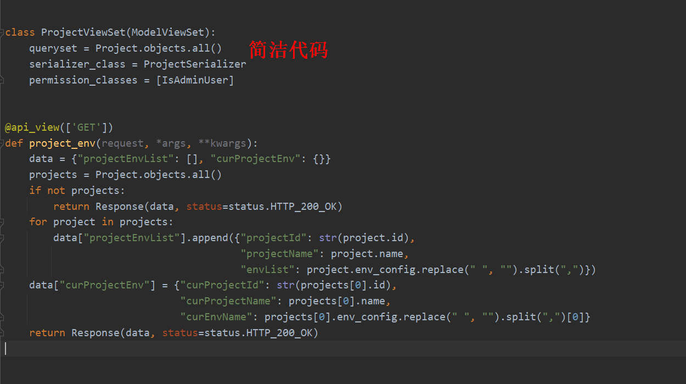
Django REST framework 的 ModelViewSet 视图类能节省很多代码，只需要三行就把项目增删改查接口做了。project_env 是函数视图，请求方法为 GET，它的作用是返回项目环境列表，当前项目和当前环境，默认为第一个项目和第一个环境。
前端需要切换不同项目和不同环境，下拉框数据来源于这个接口。
新建 views/envvar.py 新增环境变量视图：
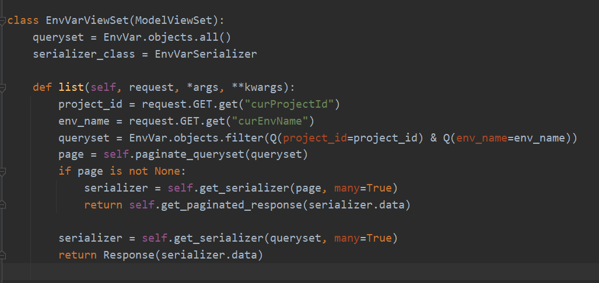
环境变量跟项目和环境是强关联的，需要根据项目环境进行过滤，所以重写了 list 方法，从前端请求拿到 curProjectId 和 curEnvName，通过 EnvVar.objects.filter 进行过滤。from django.db.models import Q支持多种过滤条件，这在后面的代码中还能看到，比如模糊匹配。
新建 views/fixture.py 新增 fixture 视图：
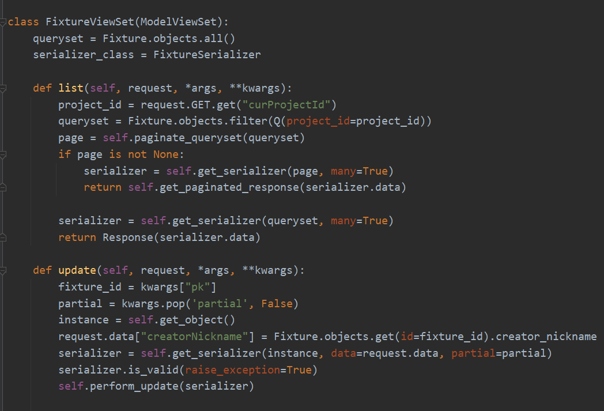
fixture 跟项目是强关联的，需要根据项目进行过滤，所以重写了 list 方法，从前端请求拿到 curProjectId，通过 Fixture.objects.filter 进行过滤。Fixture 有个 creatorNickname 字段，新增 fixture 时使用的是当前登录用户的昵称，修改 fixture 时需要用已保存的创建者，重写 update 方法来实现这个处理。
最后，新建 teprunner/urls.py 文件，把视图添加到路由中：
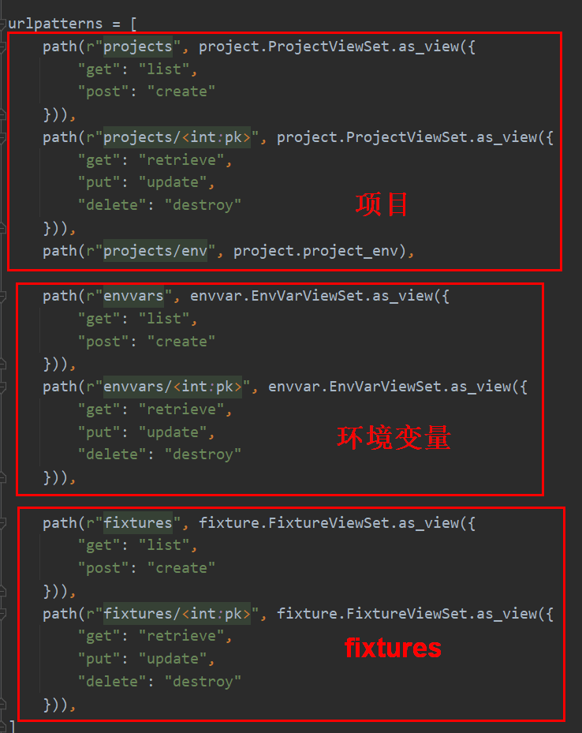
编写前端代码
编辑 package.json，添加依赖：
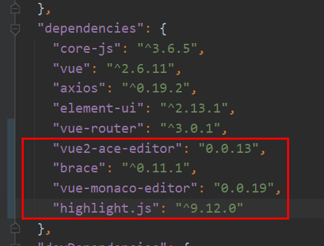
fixtures 是代码形式的，这是测试平台第一次使用代码编辑组件。添加依赖后记得执行npm install进行安装。
编辑 router/index.js：
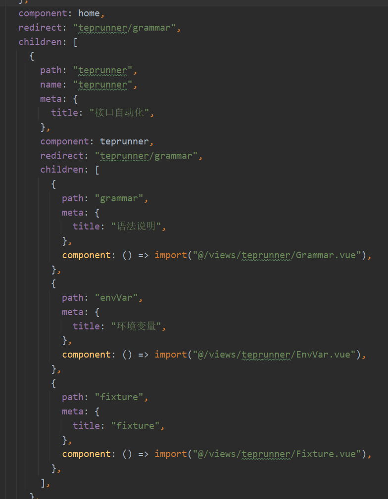
添加接口自动化的路由，并把 home 重定向改为语法说明路由。children 表示子路由。path 是路由地址。meta.title 用于显示菜单名。
编辑 views/console/index.vue：
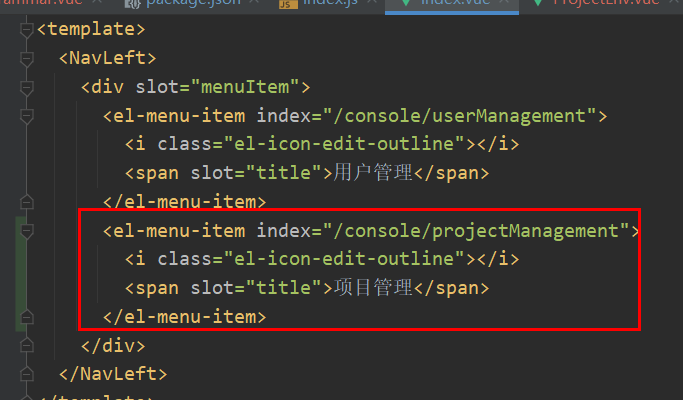
添加项目管理菜单。新建 ProjectManagement.vue 和 AddProject.vue，添加项目管理增删改查代码，跟用户管理类似，不再另加赘述。值得注意的是环境配置placeholder="请输入环境英文名（多个环境英文逗号分隔）"，因为 tep.env_vars.mapping 会用到环境名作为 key，所以只能用英文名！
编辑 components/WrapComponent.vue，添加一个插槽：
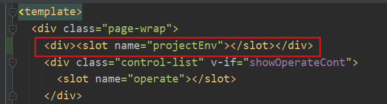
用于切换项目和环境。新建 components/ProjectEnv.vue 文件：
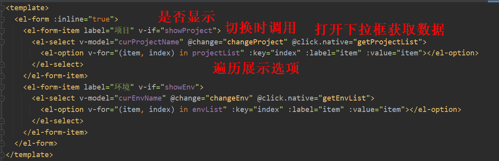
定义了两个下拉框：项目和环境。v-if 判断是否需要显示。@change 在切换下拉选项时调用对应方法。@click.native 指在点击打开时获取数据。然后用 v-for 遍历列表展示下拉选项。环境和项目数据是从 localStorage 中读取的：
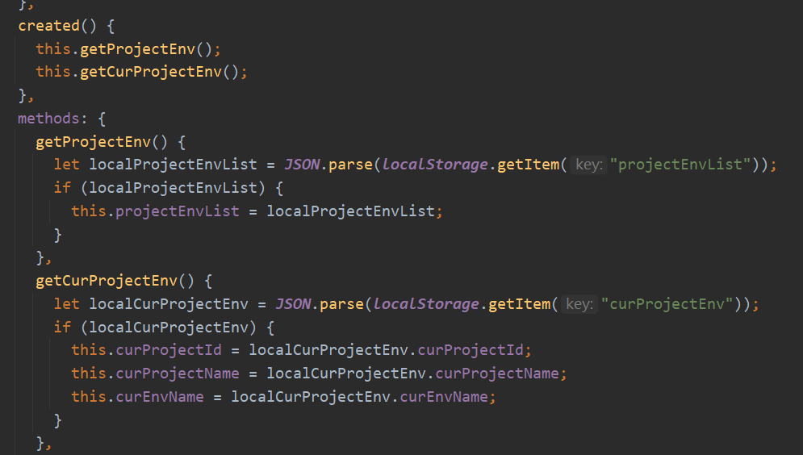
可以打开 F12 切换到 Application，点击左侧 Storage/Local Storage 检查是否有数据：
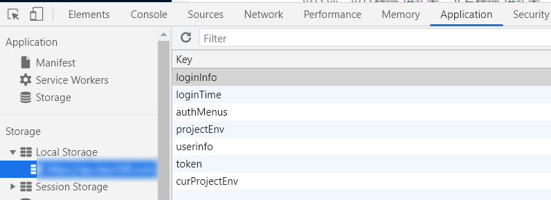
数据写入的地方稍后会讲到，先接着讲 ProjectEnv.vue 文件：
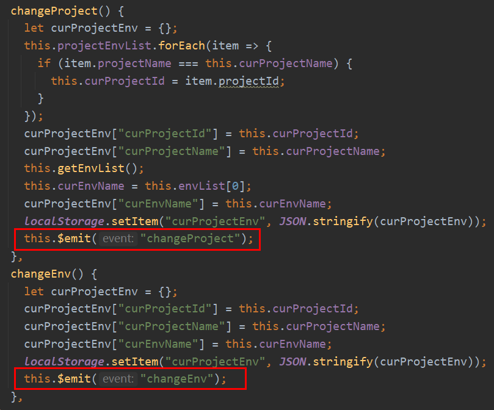
切换项目会更新环境列表和当前环境数据，这样就把这两个下拉框关联了起来。切换环境会更新当前环境数据。图中框起来的this.$emit是个重要知识点。ProjectEnv.vue 是个子组件，它是要嵌套到其他组件去的，比如 EnvVar.vue，它们是父子组件的关系。有这么个需求，切换项目时，执行一次查询操作，把查询结果更新一下。切换项目的代码是 ProjectEnv.vue 子组件提供的，执行查询操作的代码是 EnvVar.vue 父组件提供的，子组件就是通过this.$emit把这个消息通知给父组件的。
新建 views/teprunner/index.vue 文件，添加接口自动化菜单：
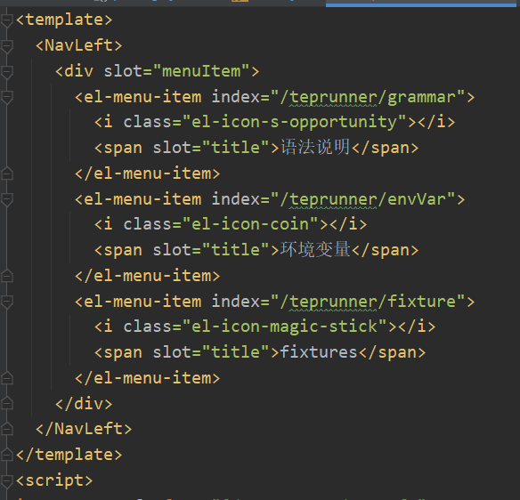
刚才说的项目环境数据的写入就是在这里进行的：
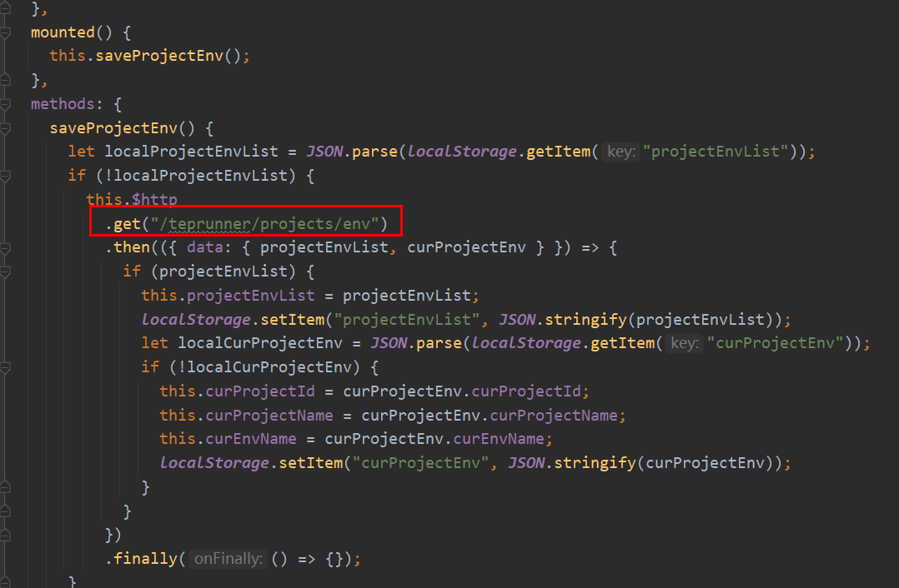
每次加载时，如果 localStorage 没有 projectEnvList 的话，就请求/teprunner/projects/env去拿。
新建 Grammar.vue，语法说明是个硬编码的静态文件，纯展示，无交互。接着新建 EnvVar.vue 和 AddEnvVar.vue，编写环境变量的增删改查，新建 Fixture.vue 和 AddFixture.vue，编写 fixtures 的增删改查，比较类似，不再另加赘述。通过 fixtures 模块的代码，看看 ProjectEnv.vue 是如何用的：
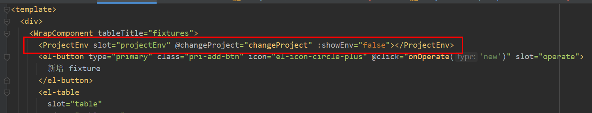
:showEnv 与 ProjectEnv.vue 子组件的属性对应，用来控制是否显示环境，Fxiture 不需要显示。@changeProject 与 ProjectEnv.vue 的 this.$emit 对应，接收子组件消息，执行查询列表操作：
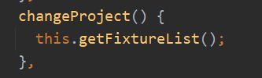
AddFixture.vue 用到了代码编辑器：
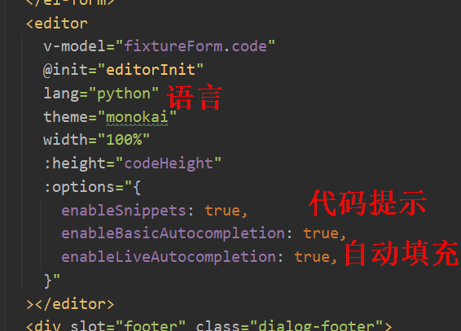
@init 指定了初始化方法：
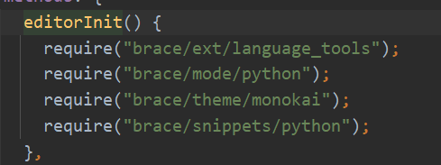
离代码完美显示还差最后一步：代码高亮。在 assets/js 添加highlight.js，并在 main.js 中导入：
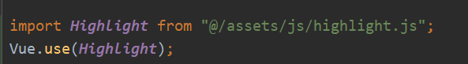
小结
经过本文的开发，如何添加菜单，前后端如何完成基本的增删改查开发已经进行了很充分的展示。遇到不会写的代码，也都能从已公开源码中找到参考。行动起来吧！边学边练，动手试试把用例管理的增删改查写出来，等我把下一篇写出来后，比较比较，可能会有更深刻的印象。CRUD 会了，定制化开发还会远么。
参考资料：